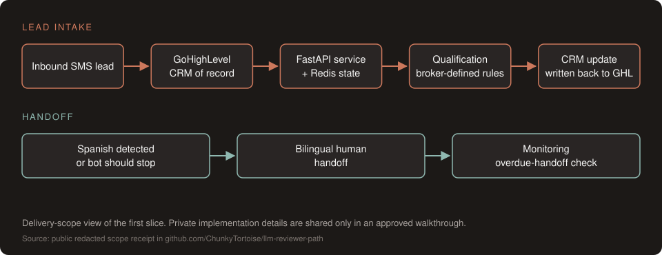

Work / Acuity Real Estate
Acuity Real Estate: bilingual SMS lead qualification inside the client's CRM
A paid client deployment, January to March 2026. Client-reported 500+ inbound leads, Spanish detection and a bilingual human handoff.
Problem
Acuity Real Estate needed inbound SMS leads qualified and routed inside its existing GoHighLevel CRM, without dropping Spanish-language traffic. Brokers had their own qualification rubric, and GoHighLevel had to stay the system of record.
Approach
- Thin first slice. A lead-intake bot only: qualify, tag and write to GoHighLevel. Buyer and seller bots came after the intake path was stable.
- Clear acceptance criteria. Warm leads reach the broker with CRM fields filled, and no Spanish thread is silently dropped.
- A kill-check. If CRM writes failed or Spanish paths fell through, pause new bot types and fix intake first.
- Human handoff by design. Spanish detection with a bilingual human handoff, and a handoff path whenever the bot should stop.
- Explicit exclusions. No new CRM, no model fine-tuning, no rebuilding the client's GoHighLevel setup.
Architecture

Results
| Result | Value | Source |
|---|---|---|
| Production run | January to March 2026 | Public redacted scope receipt |
| Inbound leads processed | 500+ (client-reported) | |
| Tests at handoff | 1,700+ (historical figure from a non-public source) |
One example of the review work: an overdue-handoff monitoring query checked bot_type for a handoff value that was actually stored in mode, so it could miss the records it was meant to catch. The fix moved the filter to mode, and a regression test captures the SQL and checks that predicate.
What I'd do next
- Measure a human-response SLA for handoffs instead of keeping it as a documented target.
- Validate automated Spanish qualification separately before expanding beyond detection and handoff.
- Add per-stage dashboards for CRM write failures and handoff latency.
Methodology & limits
Delivery receipt and evidence limits
- Acuity needed inbound SMS qualification inside its existing CRM, with broker-defined qualification rules and a human handoff for Spanish-language messages. The first delivery slice focused on lead intake and CRM updates, keeping GoHighLevel as the system of record.
- Cayman set requirements and directed AI-assisted implementation. The supported language scope was Spanish detection and bilingual human handoff. Expanding automated Spanish qualification would require separate validation.
- The monitoring correction above is evidence of a corrected query and a targeted regression check; it does not establish a measured human-response SLA. The response-time target was documented as a target, not a measured result.
- The delivery included a runbook, evaluation fixtures and a historical handoff test suite. The public redacted scope receipt records the intake slice, exclusions, acceptance criteria and the instruction to pause expansion if CRM writes or Spanish handoffs failed.
- The 500+ lead figure is client-reported. The 1,700+ tests and the review of 226 existing GoHighLevel workflows at handoff are historical figures from a non-public source (archive-verified), not independently reproduced in a public repository.
- The scope receipt is narrative scope evidence, not a current runtime test. The client repository is private; implementation details and regression provenance are available only within an approved walkthrough scope.